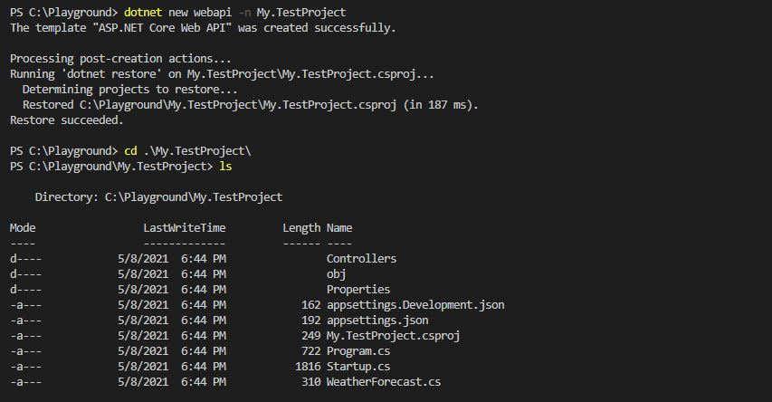
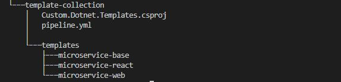
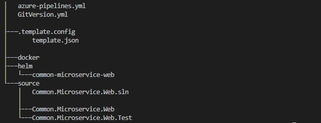
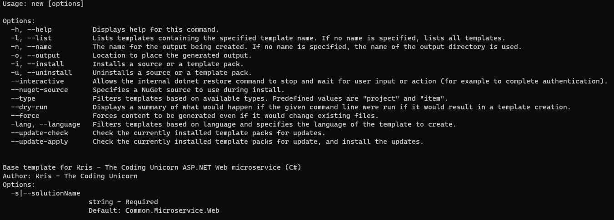
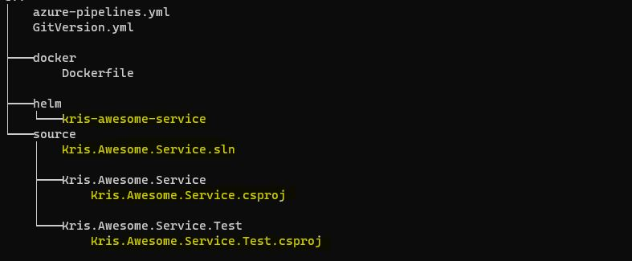
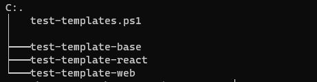

How to Create New Microservices Easily With Dotnet Custom Templates
Doing development for microservices is quite different from development for a monolithic application - it will require changes in the mindset, either you want it or not…But it's not only the mindset that will undergo changes. Let's say that you're working on creating a new component for your application that will provide functionality for sending e-mail notifications to your users. If you're creating this component for a monolithic application, you typically have one place where you'll add backend changes and one place for frontend changes. And then those changes are magically included as part of the build and deployment of the application. Nice and straightforward, huh?
If you need to create this component as a microservice, there are many more things that must be set up and configured. In case you're working with an enterprise application all the new components must also comply with already established standards in the organization. So, for the e-mail notifications service we will need to:
- create proper folder structure with correct folder hierarchy where you will place the code for your microservice
- create project code with respective test project
- add common configuration for the service
- create Docker folder with Dockerfile and other container-related resources
- create Helm folder with respective Helm charts and deployment configurations
- create build and deployment pipeline for your microservice
- create or add any additional components depending on the requirements
It seems like a lot of manual work…wouldn't it be great if you could just run one command and all of this will be created for you so that the only thing you will need to do is to add code for your microservice? Well, that's where dotnet custom templates come in!
What is a dotnet template though?
Dotnet template is a pre-set of all the files, folders and resources needed in order to create, configure and run a specific project. If you would like to create an ASP.NET Core Web API project, you can just run
dotnet new webapi -n My.TestProject 
In most cases just creating basic project is not enough and you still need to perform many additional steps like the ones I listed above for the e-mail notification service. That's when you can take all the files and resources you need and wrap those into re-usable and extendable custom dotnet template, or even a collection of multiple templates.
How to create a custom dotnet template?
You can either create a single template or you can create a template pack which will consist of multiple templates packaged into a single file. I will explain the latter based on how we've done it in one of the projects I've been a part of.
Let's move on from an e-mail notification service to a more generic use case. Let's imagine that we have several development teams creating different types of microservices and many of these services are either created as ASP.NET Core Web API or React applications. We would like to make life of these developers easier and to minimize amount of manual work they're doing when creating a new microservice - for example, creation of all the necessary folders, setting up build pipeline from scratch, naming struggles, etc. We want to create 3 different templates that will help developers in our team to create new microservices based on established best practices. First template will be used to create an ASP.NET Core Web API application, second template will be used to create a React application and third template will be a more generic one, for the cases where we don't know yet what technology stack will be used for the new microservice - this template will not create any application code but will only set up basic folder structure and include common files like Dockerfile, build pipeline yaml-file and Helm charts. All the templates will be packaged into a single file that will be pushed as a NuGet package to our NuGet feed from where any developer in our team can easily install it and run whatever template they need from our custom collection.
First, we need to create a directory where the template package will reside - let's call it "template-collection". Inside this directory we will create a folder called "templates" where resources for all dotnet custom templates will be placed into. In our case "templates" folder will contain 3 folders with respecitve template names: "microservice-web", "microservice-react" and "microservice-base". In addition, we will create 2 more files inside "template-collection" directory:
- pipeline.yml: this file will contain build pipeline definition that will package dotnet template collection and push the generated NuGet package to our private NuGet feed (or public feed, depending on your use case).
- Custom.Dotnet.Templates.csproj: this is a basic C# project file that can be built in order to produce a NuGet package for our template collection. Example of the project file I have used is provided below: first batch of properties is used to provide information that will be used and displayed as part of the NuGet package. TargetFramework property is needed in order for the MSBuild to run properly when the project is being compiled and packed. It is also possible to provide <PackageVersion> property but in our use case we'll be using semantic versioning to centrally and automatically version the NuGet package as part of the build pipeline execution, therefore the property is not defined in this example. Second batch of properties, starting with <IncludeContentInPack> will be used to include all the custom templates in the proper folder when NuGet package is created. Lastly, settings defined in the <ItemGroup> section will include only what's located in "templates" folder (except for "bin" and "obj" folders since we don't want output from our testing to be a part of standard template package). <Compile> setting will prevent compilation of any code located in "templates" directory - the purpose of this project file is not to build any real application code but to generate a collection of project templates.
<!-- This is example code for project definition used to create dotnet template collection pack -->
<Project Sdk="Microsoft.NET.Sdk">
<PropertyGroup>
<PackageType>Template</PackageType>
<PackageId>Custom.Dotnet.Templates</PackageId>
<Title>Dotnet Custom Templates Collection</Title>
<Authors>Kris - The Coding Unicorn</Authors>
<Description>Collection of common templates to use when creating microservices and related components.</Description>
<PackageTags>dotnet-new;templates</PackageTags>
<TargetFramework>net5.0</TargetFramework>
<NoDefaultExcludes>true</NoDefaultExcludes>
<IncludeContentInPack>true</IncludeContentInPack>
<IncludeBuildOutput>false</IncludeBuildOutput>
<ContentTargetFolders>content</ContentTargetFolders>
</PropertyGroup>
<ItemGroup>
<Content Include="templates\**\*" Exclude="templates\**\bin\**;templates\**\obj\**" />
<Compile Remove="**\*" />
</ItemGroup>
</Project>More information about project file settings and properties can be found in Microsoft Documentation: https://docs.microsoft.com/en-us/dotnet/core/tutorials/cli-templates-create-template-pack#create-a-template-pack-project
Our folder structure will look something like this:

Now it's time to add some content to our templates!
How do I transform a microservice template to a dotnet template?
In order to transform a project template to a dotnet template we will need only two things:
- Files and resources needed to create a specific microservice
- template.json file that will contain configuration needed in order to deploy the resources when dotnet new command is executed.
Let's take ASP.NET Core Web API template from our collection as an example. We have created a folder in "template-collection" directory called "microservice-web" - that's where we'll add all the files, folders and application code needed in order to create a common ASP.NET Core Web API microservice. In addition to that we'll create a new folder called ".template.config" (mind the syntax, it must be exactly the same!) where we'll place a file called "template.json". That's how dotnet templates are recognized - now that ".template.config" folder and "template.json" file with (soon) necessary configurations exist at the root of our template, we can simply run
dotnet new microservice-web -n My.WebProject "template.json" file can include quite extensive configuration depending on the use case so I will not get too much into details of every available configuration that can be added - there are great resources out there where you can read more about it, and I will provide some useful links later in this post. Let's define some configuration for our ASP.NET Core Web API microservice template.
Our template will include:
- application code with respective unit tests,
- files and folders needed to create Docker container for our application,
- Helm charts for easier configuration and deployment of our application in Kubernetes,
- build pipeline definition written in yaml,
- GitVersion.yml for semantic versioning of our application.
Template configuration will look something like this:
{
"$schema": "http://json.schemastore.org/template",
"author": "Kris - The Coding Unicorn",
"classifications": [ "Common", "Web", "Microservice" ],
"name": "Base template for Kris - The Coding Unicorn ASP.NET Web microservice",
"identity": "Microservice.CommonTemplate.CSharp",
"shortName": "microservice-web",
"tags": {
"language": "C#",
"type": "project"
},
"sourceName": "common-microservice-web",
"preferNameDirectory": true,
"symbols":{
"solutionName": {
"type": "parameter",
"isRequired": true,
"FileRename": "Common.Microservice.Web",
"defaultValue": "Common.Microservice.Web",
"replaces":"Common.Microservice.Web"
}
}
}As you can see, some of the settings are pretty straightforward but some might need further clarification:
- "classifications" - represents tags that are displayed for every template when you run the "dotnet new –list" command to get an overview of all available dotnet templates;
- "shortName" - represents the name of the template that you use when you run the "dotnet new" command to install a specific template;
- "sourceName" - that's the name of your microservice, i.e. your application. In the configuration we'll need to provide a default name for a microservice - this is also the name we will be using as a default placeholder several places in our template resources. For example, this default name will be typically set as Docker container name and application Helm chart name. When developer deploys the template, all the mentioned placeholders in the template resources will be replaced with the value that the developer will provide for -n argument.
- "preferNameDirectory" - when set to "true", it will create a directory for the template if output directory is not provided. If set to "false" (default value) and output directory is not provided, the template resources would then have been deployed to the current directory.
- "solutionName" - that's one of the configuration settings provided in "symbols" section. In this section you can define any additional arguments that the user will need to provide when deploying a template. It also has a default value that is being used as a placeholder in template resources. In our use case we need only one additional argument which is the solution name - this value will be used as a C# project name and solution name wherever those are created and referenced. Default value will be replaced with the one developer provides for -s argument. Argument shortkey is automatically generated and is typically the first letter of the symbol name.
After all the changes "microservice-web" folder structure will look like this:

Awesomesauce, I think we're all set and ready to test our ASP.NET Core Web API microservice template!
How do I test the dotnet template and verify that it performs as expected?
So, we've done a great job so far and are ready to test our template collection locally before adding it to our source code. I will explain how we can test a single template and all the templates in the collection.
Testing single template
Let's test ASP.NET Core Web API microservice template we've created in the previous section. Since it's a custom template it doesn't exist in .NET SDK by default, that's why we'll need to install it first. You will need to run the command from the directory where template folder is located or provide full path to the template folder. We can install the template by executing following command:
dotnet new -i ./template-collection/templates/microservice-web Now we can run a help command for our newly installed template and see what arguments must be provided as part of the "dotnet new" command:
dotnet new microservice-web -h And the output will be:

As you can see, apart from the name of our application we'll also need to provide the solution name. Let's go ahead and create our ASP.NET Core Web API microservice:
dotnet new microservice-web -s Kris.Awesome.Service -n kris-awesome-service After the command is executed we can verify that the resources have been deployed to the current directory and all the default placeholders have been replaced with the names I've provided in the above command:

If I want to specify another directory to deploy the microservice resources to, I can do that by providing -o argument:
dotnet new microservice-web -s Kris.Awesome.Service -n kris-awesome-service -o "C:/Playground/my-microservice" Testing template collection
When you have multiple templates, you would like to test them all at once. You can do this manually by packaging the template collection, installing the produced NuGet package locally, and then running "dotnet new" for every template in the collection. What I would recommend though is to create a script that will do all of it for you, including deployment of all the templates in the collection so that the only thing you will need to do after running the script is to verify that the output looks correct.
Here is an example of the PowerShell script we can use for our use case with 3 templates:
$TemplateCollectionDirectory = "C:/Playground/template-collection"
$TemplateOutputDirectory = "C:/Playground/template-output"
Set-Location -Path $TemplateCollectionDirectory
#Package and install template collection NuGet
dotnet pack #Package our template collection (remember our C# project file that defined what template resources must be included in the package?)
dotnet new -i $TemplateCollectionDirectory/bin/Debug/Custom.Dotnet.Templates.1.0.0.nupkg
#Deploy all the templates in the collection
dotnet new microservice-web -s Kris.Awesome.Service.Web -n kris-awesome-service-web -o $TemplateOutputDirectory/test-template-web --force
dotnet new microservice-react -n kris-awesome-service-react -o $TemplateOutputDirectory/test-template-react --force
dotnet new microservice-base -n kris-awesome-service-base -o $TemplateOutputDirectory/test-template-base --forceThen you can navigate to the output directory you've deployed your templates to and verify that the resources are created as expected, and with proper namings.

When you're done with testing you can uninstall the template collection by simply running following command:
dotnet new -u Custom.Dotnet.Templates How do I pack and make template collection NuGet package available for others?
Now that you've tested your template collection and everything looks good, you can make the templates available for others to try out. You will need to upload the NuGet package that contains your template collection to public or private NuGet feed (depending on what development processes you have in place). I have used Azure Pipelines for this - every time new changes are added to the template collection, a build is triggered that will package the template collection, version the package and push it to the NuGet feed that I've specified.
Pack and push build tasks will look something like this:
- task: DotNetCoreCLI@2
displayName: 'Package my dotnet template collection'
inputs:
command: 'pack'
packagesToPack: '**/Custom.Dotnet.Templates.csproj'
packDirectory: '$(Build.ArtifactStagingDirectory)/nuget-packages'
versioningScheme: byEnvVar #for semantic versioning
versionEnvVar: GitVersion.SemVer
- task: NuGetCommand@2
displayName: 'Push template collection NuGet package to my feed'
inputs:
command: push
packagesToPush: '$(Build.ArtifactStagingDirectory)/nuget-packages/*.nupkg'
publishVstsFeed: <YOUR_NUGET_FEED_ID>
allowPackageConflicts: false
condition: and(succeeded(), ne(variables['Build.Reason'], 'PullRequest'), or(eq(variables['Build.SourceBranch'], 'refs/heads/master')))After the build has succeeded, your template collection will become available and ready to be used by millions of developers - amazing job! :)
Where can I read more about dotnet templates?
There are several resources available if you would like to get deeper understanding of how to create dotnet custom template and how dotnet template engine is functioning. Here are some of the resources I used in order to get better understanding of dotnet templates:
-
Microsoft documentation for "dotnet new" command: https://docs.microsoft.com/en-us/dotnet/core/tools/dotnet-new
-
Microsoft documentation on how to create custom templates for dotnet CLI: https://docs.microsoft.com/en-us/dotnet/core/tools/custom-templates
-
.NET Blog article about how to create your own templates for dotnet new, written by Visual Studio senior program manager Sayed Hashimi: https://devblogs.microsoft.com/dotnet/how-to-create-your-own-templates-for-dotnet-new
-
Official reference documentation for template.json file that is used to define configuration of the dotnet template: https://github.com/dotnet/templating/wiki/Reference-for-template.json
-
GitHub repository containing source code for dotnet Template Engine: https://github.com/dotnet/templating
-
GitHub repository containing samples of dotnet templates for dotnet new command: https://github.com/dotnet/dotnet-template-samples
-
Informative InfoQ article, written by developer advocate at JetBrains Matt Ellis, about how .NET Core Template Engine can be used to create custom templates and projects: https://www.infoq.com/articles/dotnet-core-template-engine
Well, that's it from me on this topic, thanks for checking in! Hopefully it was useful for you and go ahead and create some dotnet templates of your own - that's how you really learn ;)
If this article was helpful, please let me know about it! You can reach out to me on LinkedIn, GitHub or by using the contact form on this page :)
Till we connect again!